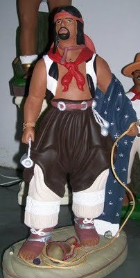
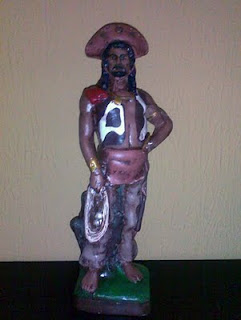
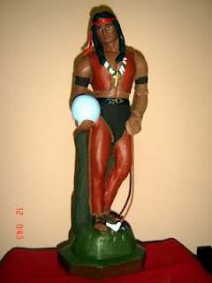
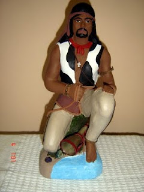

откуда растут ноги у корридос или что поем
засел тут за один интересный сайт, посвященный культуре boiadeiros
boiadeiro (пастух) или тот же vaqueiro в традиции umbanda, candomble и candomble de caboclo является уважаемым символом-божеством,которому посвящают песни и проводят соответствующие упоротые ритуалы с жертвоприношениями под перкуссионные ритмы.
бойадейрос бывают разные — черные, белые, красные. нет, правда:-)
вот,например:
boiadeiro das almas da mina

boiadeiro do sertao

boiadeiro venancio

boiadeiro de caboclo

как и в других традиционных ритуалах афроязычников песни бойадейрос исполняются на атабаке (как правило, в виде трех штук):
Os atabaques são formados basicamente por três elementos
da natureza: Animal (couro), Vegetal (madeira),
Mineral (ferragens). Estes elementos por sua vez
encontram-se no ambiente (reino) natural destas entidades
e a força da curimba no terreiro está justamente em conseguir
dissipar as energias negativas, inibir a ação de obsessores
e desagregar miasmas e larvas astrais que estejam impregnados
no ambiente de trabalho conseguindo com isso um êxito maior.
начинаются они с дроби и восклицания похвалы (этакая chula):
xetro marrumbaxetro
xetro (coro)
xetro marrumbaxetro
xetro (coro)
или jetua (chetrua) caboclo boiadeiro
jetua (coro)
jetua oxossi de ogum
jetua (coro)
и т.д.
часть упоротого ритуала c последующим вгонением в транс:
что такое "джетуа" или "шетруа" сказать не смогу, поисковик единственное что нашел - jetua - город в республике гана (африка). может, специалисты подскажут, буду рад чрезмерно.
постепенно в процессе знакомства с текстами, что-то уж часто обнаруживаются старые известные - те же самые vaquiero, tiro chapeu, apanha menino, bom jesus de lapa и пр. и что ж, на тебе:
Toma lá Vaqueiro
Toma lá vaqueiro,
Toma jaleco de couro,
Toma jaleco de couro,
Na porteira do curral.
а я-то все время думал, причем тут быки, причем тут сюртук кожаный. и наконец-то до меня доперло что же это за самая "chapeu de couro". шляпа ковбоя, значит:
Com meu chapéu de couro
Por Deus abençoado
Ao chegar peço licença
Para entrar nesse reinado
Ele é da Bahia
Esse baiano vale ouro
Ele é da Bahia
Salve seu Chapéu de Couro
дальше - веселее:
Quem vem lá sou eu
o maior é Deus
se a cancela bate,
boiadeiro sou eu.
вот тебе и "беримбау батеу, капоэйра со эу".
а вот "a menina do sobrado", которую луараста исполнял на одном из треков.
A menina do sobrado
mandou me chamar
pra seu criado
A menina do sobrado
mandou me chamar
pra seu criado
eu mandei dizer a ela
que estava tocando seu gado
eu mandei dizer a ela
que estava tocando seu gado
Auê boiadeiro
eu gosto do samba rasgado
Auê boiadeiro
eu gosto do samba rasgado
хор пропевает все:
A menina do sobrado
mandou me chamar
pra seu criado
A menina do sobrado
mandou me chamar
pra seu criado
eu mandei dizer a ela
que estava tocando seu gado
eu mandei dizer a ela
que estava tocando seu gado
Auê boiadeiro
eu gosto do samba rasgado
Auê boiadeiro
eu gosto do samba rasgado
песня о вызывании дождя + minha boiada ie falta um boi. обратите внимание как поется последняя.
и еще кстати, заметьте, как схож ритмически рисунок с тем, что исполняется сейчас под соусом макулеле. что-то сдается мне, что и большая часть текстов была утянута из песен скотопогонщиков.
помните «боа нойче пра кень боа нойче»?
а. да вот жеж она:
boa noite meu senhor
boa noite para o cavaleiro
boa noite meu senhor
boa noite para o cavaleiro
eu sou o caboclo guerreiro
mas todos chamam d caboclo vaqueiro
eu sou o caboclo guerreiro
mas a todos chamam d caboclo vaqueiro
или:
Sai
Boa noite meus senhores
Sai, sai
Boa noite venham cá
Sai ,sai
Eu me chamo boiadeiro
Sai ,sai
Aqui em qualquer lugar
Sai ,sai
Não nego meu natural
voce beber jurema?
еще там постоянно встречается jurema, которую скотопогонщики постоянно beber. (логично, с чего бы нормальному пастуху и не бухнуть под конец рабочего дня:-)
и наконец, сдается мне что шибата (хлыст) вовсе не плантатора, которым он порол по жопам неугомонных рабов, а хлыст лошадный.
за сим завершаю сий опус. в общем, не судите, пожалуйста, строго если что:-)
это, мягко говоря, моя кривая попытка-исследование разобраться в корнях того, что мы обычно пропеваем на наших общих родах) возможно, моя версия того, что многие песни капоэйры и макулеле тянутся из пастушьих песен и неверна. хотя кто знает?
в псот призываются специалисты по африканскому шаманизму и кандомбле. и свету пастухову тоже сюда, пожалуйста, может что подскажет:-)